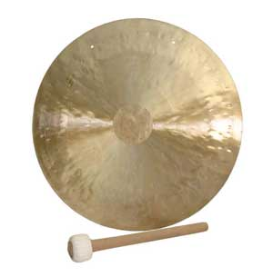

Bells and Gongs

Homepage
Who we are
Our people
The Founder John Smith
The President Margaret Donovan
Board Member Fred Jones
Board Member Michelle Ryan
Board Member Emily Upper
Board Member John Samuels
Board Member Johnathan Smith Wellington Brownstone
Our products
Malas
Zufus & Zabutons
Meditation benches
Bells & Gongs
Incense bowls